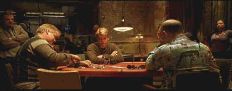

Miramax/1998/121m/WS 2.35
Michael McDermott is a poker player who also happens to be a crack second year law student at a New York University. Grinding out conservative winnings at poker has paid his way through school, but the lure of the big game, the thrill of the spotlight of Las Vegas and The World Championships of Poker are more than Michael can withstand. When Michael gets a taste of the harsh reality of losing the big hand, he swears off the game to save his relationship with his beautiful live-in comrade in law. The worm turns when Michael's close friend and fellow shark "Worm" is released from prison where he hustled inmates and guards at the game he plays well. There's romance, nastiness, a dash of this and that on the road to the big game. The world of poker has a continuous sleazy stream of smoke running through in the games that count. Will Michael find his way through the mist of temptation?
 |
Playing the tough hands©Miramax |
Director
John Dahl is almost a throwback to filmmakers of the past. There is an efficiency about
his work, a cleanliness that makes storytelling the prime task of the movie, just as it
should be. There are no fancy cuts, no camera angles that call attention to themselves.
Dahl gives the actors room to express themselves and creates a consistent picture.
Matt Damon does a good job as Michael. Damon has the hunger that
feeds this character. The actor's likability helps make Michael McDermott a character that
you care about despite many obvious shortcomings. The same cannot be said for Worm as
played by Edward Norton. He's thoroughly obnoxious, even stupid in his arrogant dance
through life. One wonders why Michael has stood by Worm even this long, though youth is
often a blindfold to seeing and understanding the character of others. John Malkovich has
a chance to overact as Teddy KGB, a seedy Russian mob figure who runs a big stakes back
door poker game. John Turturro knows his character of Joey "Knish" very well and
does a workmanlike job of playing Michael's conscience. Gretchen Mol can be my lawyer any
ole' time.
There are so many various lighting schemes in The Rounders
it's amazing that this DVD got it right. Whether washed by the green tinge of fluorescent
lighting or bathed in the warm glow shaded wall sconces, the DVD replicates the feelings
right on. Every poker game has a different lighting sense to it and this adds a powerful
visual dynamic that makes the action feel very different in the many situations. The color
is consistently strong and image detail is superlative. There is no obvious evidence of
edge enhancement. Christopher Young's tightly packed score is given the proper quickness
in this Dolby Digital 5:1 recording. Don't expect an aggressive surround mix in a film of
this sort, though the Atlantic City casino scenes have enough going on to remind you of
the room.